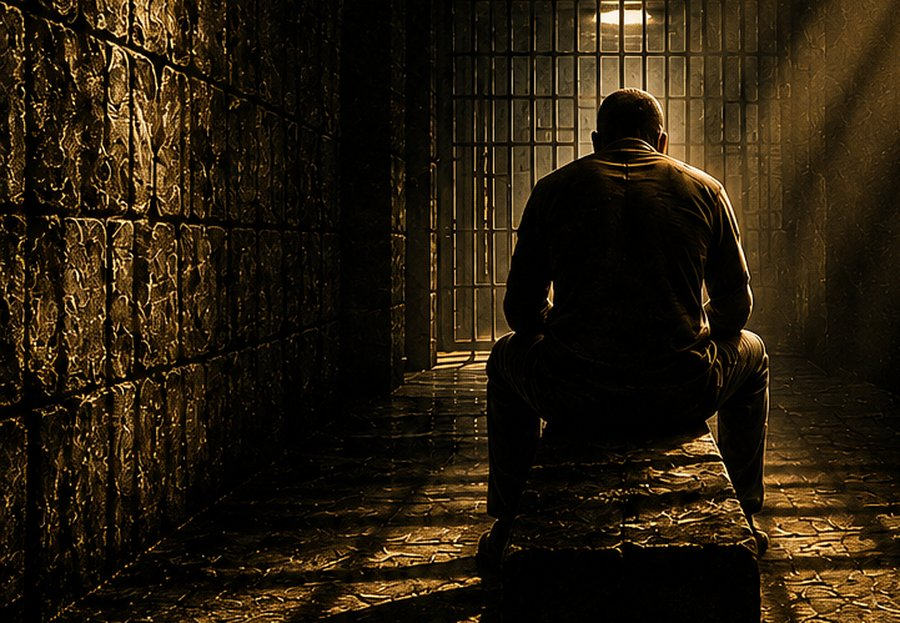

Antes de continuar
Cada pessoa chega até aqui carregando uma história diferente.
Você acabou de escolher começar um recomeço.
Quero fazer algumas perguntas simples antes de seguir.
Não existem respostas certas. Escolha apenas aquilo que mais se aproxima do que você sente hoje.
Quando você pensa no que mais pesa hoje, o que vem primeiro?
E o que mais dói nisso?
Às vezes, a parte mais difícil não é aquilo que aconteceu.
É aquilo que começamos a acreditar sobre nós mesmos depois.
O que você mais gostaria de encontrar agora?
Obrigado por responder.
Pelo que você compartilhou, parece que existe uma parte da sua história que ainda pede uma resposta.
Talvez não seja possível apagar o que aconteceu.
Mas talvez seja possível mudar aquilo que acontece dentro de você por causa disso.
Quero te contar uma coisa que aconteceu comigo.

Eu não sei exatamente o que aconteceu com você.
E não vou fingir que sei.
Mas conheço a sensação de olhar para a própria vida e perguntar:
“Como foi que tudo chegou até aqui?”
Foi desse lugar que nasceu uma história.

Quando Morri por Dentro
Ouvir minha história